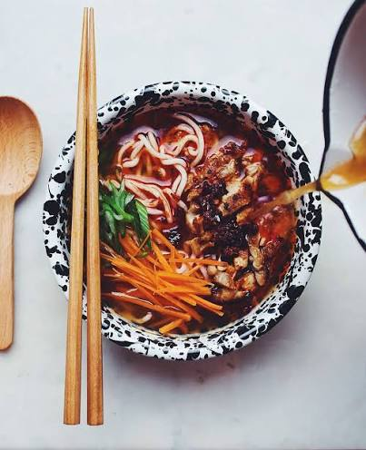

I chose this recipe becuase it is really quick and easy. Me and my sister enjoy it from time to time when we arehome alone. My great uncle "A bowl of ramen is a self-contained universe with life from the sea, the mountains, and the earth, all existing in perfect harmony—and what holds it all together is the broth, which gives life to the ramen."
| ingredients | amount | steps |
|---|---|---|
| water | 2 cups | put the noodles in the water |
| instant noodles | 1 packet | cook in microwave for time stated on the packet |
| flavoring packet | 1 packet | add flavoring packet and stir |